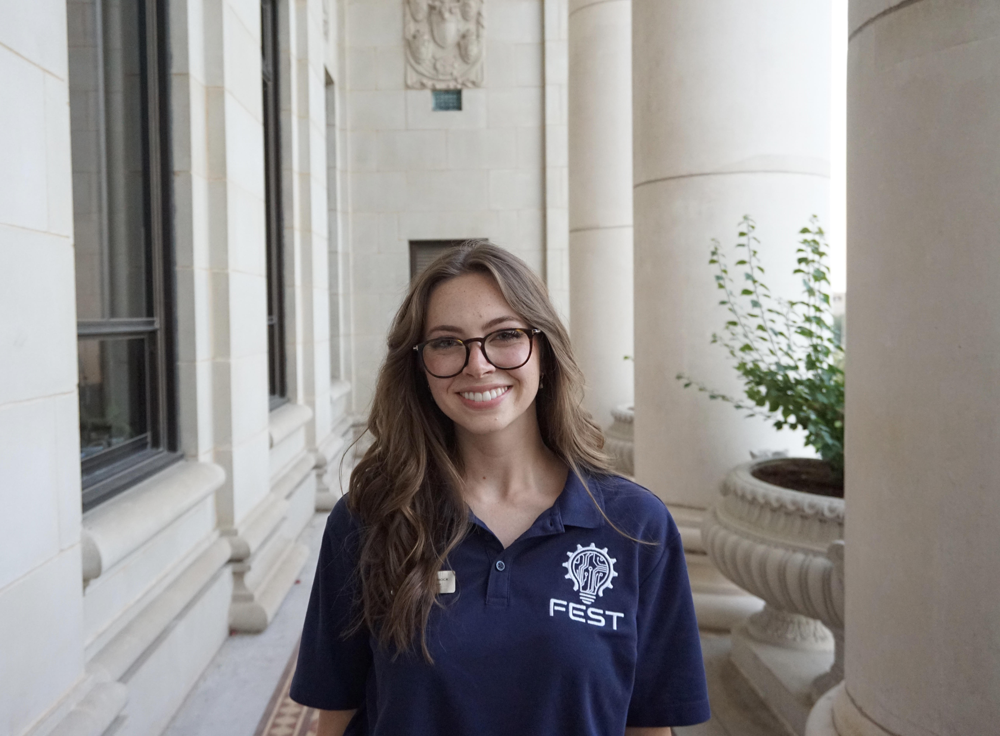

Bridging technology, humanities, and learning.
A lifelong student, organization-enthusiast, and dreamer, my goals are centered on balance and the ambition to continuously improve. I am currently studying Computer Science and Neuroscience at Texas A&M University with the intentions of using this knowledge to further research and development on human-computer interaction and neurological understanding. My studies and work are strongly supplemented by my passion for writing and creativity – I am a lover of interdisciplinary learning and have a passion for intersecting often-separated disciplines. Thanks for visiting my page!